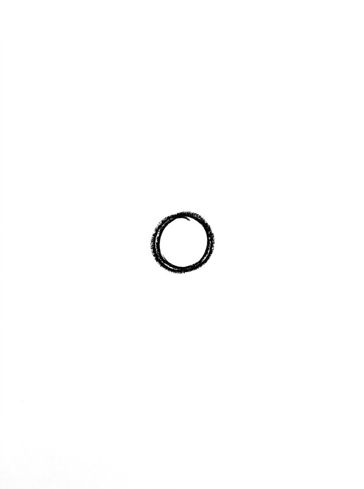
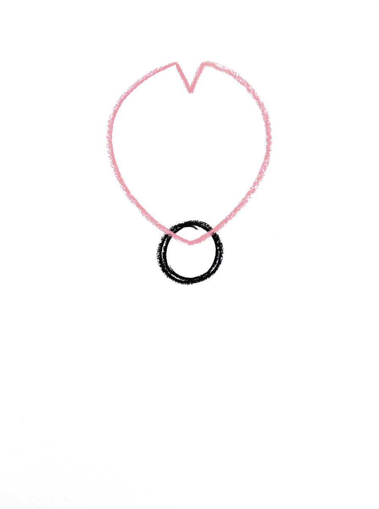
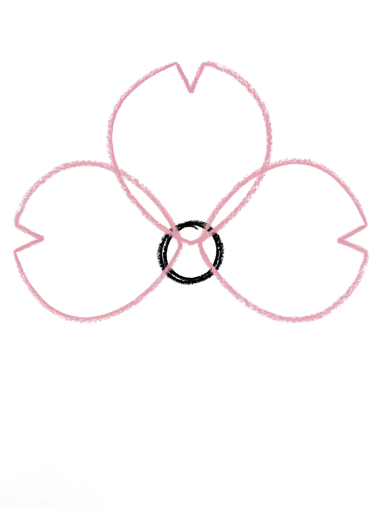
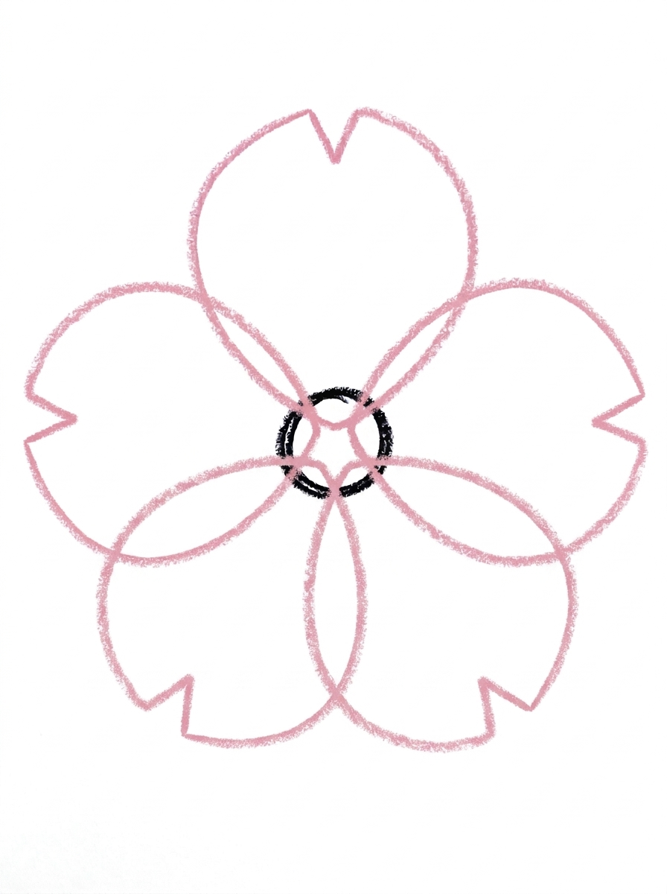
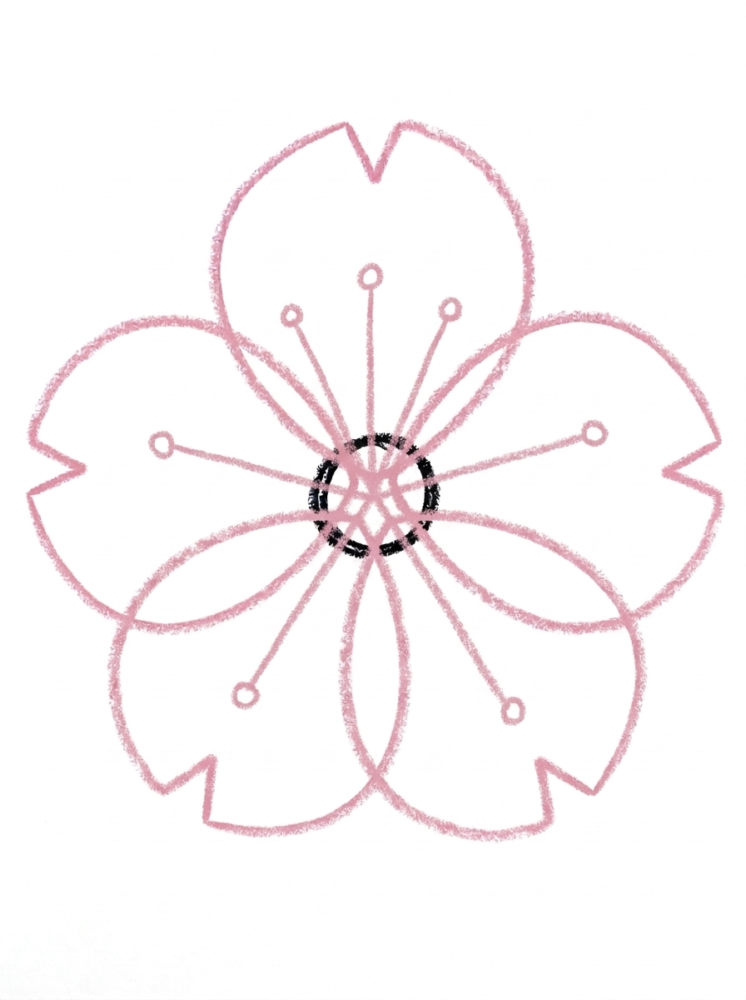

Sakura Flower Drawing for Kids How to Draw A Sakura Flower in 6 Easy Steps
Quick Answer
Draw a sakura flower in six easy steps: start with one small circle center, add a notched petal on top, two side petals, and two bottom petals to make five, draw stamen lines with dots inside the center, then color the cherry blossom pink and yellow. Made for ages 3 and up — no signup needed, just print and draw.
At a Glance
- Subject: How to draw a sakura flower
- Ages: 3+
- Steps: 6 steps
- Time: ~15 min
- Difficulty: Easy
- Supplies: Paper, crayons
A sakura flower — Japan's beloved cherry blossom — looks delicate, but for kids it is wonderfully simple: one small circle with five wide petals arranged around it like a star. Each petal gets a tiny notch in its tip, and that one little detail is what makes the flower read instantly as a cherry blossom.
✏️ Draw Your Sakura Flower in 6 Easy Steps
One step per box — this step by step sakura flower drawing shows each new part in a different color so kids can see exactly what changed.
Step 1: The Center

Draw one small circle. This is the center of your sakura flower.
Step 2: The First Petal

Draw one petal at the top of the center — a rounded petal shape, wider at its outer end, with a small V-shaped notch cut into the tip.
Step 3: Two Side Petals

Draw two more petals, one on the left side and one on the right side of the center, each with the same little notch in its tip.
Step 4: Two Bottom Petals

Draw two more petals, one at the bottom-left and one at the bottom-right of the center. Now your flower has five petals.
Step 5: The Stamens

Inside the center circle, draw three thin lines spreading out from the middle, each one ending in a small dot at the circle's edge. These are the stamens.
Step 6: Color It In

Color your sakura! Pale pink for the five petals with deeper pink at the notched tips, warm yellow for the center circle, deep pink for the stamen lines, and golden yellow for the stamen dots. Great drawing!
📊 Sakura Flower Drawing by Age
Every age can join in — just adjust the job.
| Age | What they can do | Tip |
|---|---|---|
| 3-4 | Draw the center circle and color the petals pink at the end. | Keep the center small — the wide petals are the stars of this flower and need the room. |
| 4-5 | Add the top petal and the two side petals, each with its little notch. | Show them the notch is just a tiny V snipped into the tip — two short lines meeting in the middle. |
| 6+ | Complete all six steps, spacing all five petals evenly and drawing the stamens. | Encourage a whole branch of blossoms once one flower feels easy. |
🖨️ Download Your Free Sakura Flower Drawing Printable
The printable lays out all 6 steps one per box, big enough for little hands — kids draw right alongside each step.
⬇️ Open Free Printable 🖨️ Print🎁 Free printable for ages 3+
🌸 A Whole Cherry Blossom Branch
One sakura flower is pretty — a branch full of them is a picture. Draw one long, gently curving brown line across the page for a branch, then repeat the six steps to add blossoms all along it: big ones, small ones, and a couple of buds that are just a petal or two peeking open. A few petals floating on the wind beside the branch finish the spring scene.
What You'll Need to Draw A Sakura Flower
All you need is a pencil, an eraser, and the printed tutorial page. For coloring, pale pink and a deeper pink crayon or marker handle the petals and their tips, warm yellow and golden yellow cover the center and stamen dots, and a brown is handy if your child wants to add the branch from the challenge.
What They're Learning
This tutorial practices arranging five matching shapes evenly around one small center circle — an early, friendly version of radial symmetry. Kids repeat one petal shape five times (great for consistency and hand control), add a V-shaped notch to each tip, and finish with thin lines and dots for the stamens, which is lovely fine-motor practice.
Make It Yours
Try a whole branch of blossoms from the challenge, a single giant sakura filling the page, or a falling-petal scene with loose petals drifting under the flower. Kids can also color a blossom in white with pink tips like some real cherry blossoms, or draw three flowers in a triangle and connect them with a curving stem and two leaves.
🛒 Our Favorite Drawing Supplies
These are the supplies we reach for in our own home — washable (because kids), quality paper, and enough colors to avoid fights.
As an Amazon Associate, MomYouNeedThis earns from qualifying purchases — at no extra cost to you.
💡 Sakura Flower Drawing Tips for Parents
The petals make or break this flower, and the secret is width: each petal should be wide and rounded — about twice as wide as the small center — so the five of them overlap slightly with no gaps between them. Thin, pointy petals spaced apart are the one thing that stops the drawing from reading as a cherry blossom, so if a petal comes out skinny, widening it fixes the flower instantly.
The notch is a small detail worth slowing down for in step two, because it repeats on every petal. Draw it as a tiny V right in the middle of the petal's tip. Once your child has the rhythm — wide petal, little notch — steps three and four go quickly, and counting 'five petals' at the end is a satisfying check.
✏️ Sakura Flower Drawing Step by Step
A step by step sakura flower drawing builds the blossom the way the real flower grows: from the center outward. Starting with the small center circle gives every petal a home to attach to, so nothing floats or crowds.
The petals arrive one at a time — top, sides, then bottom — which keeps the spacing even without any measuring. By the time the fifth petal lands, the flower has its full star shape and already looks like a cherry blossom before a single detail is added.
Finishing details come last, when the big shapes are settled: thin stamen lines with dots inside the center, then the soft pink coloring. That order — big shapes first, tiny details last — is the habit every good drawing tutorial teaches.
See free sakura flower printable for more.
✏️ One Shape Per Step, Six Steps Total
You do not need to re-read the steps to know this sakura flower drawing is on track — check it as you go. Once the petal ring is finished, count the petals: one at the top, two at the sides, two at the bottom — five in total. Four or six means a petal is missing or doubled, and it is easy to fix before any coloring starts.
Next, check the notches. Every petal tip should have the same small V notch, right in the middle of the tip — five petals, five notches. The notch is what makes the flower read as a sakura instead of a plain round flower, so a tip that came out smooth is worth a second look. Then check the gaps: each petal should be wide — about twice as wide as the small center — so the five overlap slightly, with no gaps between them. A skinny petal with space on both sides is the one slip that stops the drawing looking like a cherry blossom; widen it on the spot.
Inside the center, check the stamens: thin lines spreading out from the middle, and every line should end in a small dot at the circle's edge — a line with no dot has missed its ending. Save the last check for coloring time: pale pink petals with deeper pink tips, the center warm yellow, and the stamen dots golden yellow.
See free sakura flower printable for more.
🌸 The Cherry Blossom Kids See in Spring
Sakura is the Japanese word for cherry blossom, and the flowers are famous for blooming all at once in spring and falling like pink snow a week or two later. Kids who have seen a cherry tree in bloom will recognize this flower's pale pink color and notched petals right away.
The notch is the detail that makes a sakura different from a plain round petal flower: real cherry blossom petals have a small split at the tip, and this tutorial keeps that signature in every one of the five petals.
Because the blossom is built from one repeated petal, it is a natural bridge to pattern play — a row of blossoms along a branch, a circle of blossoms like a wreath, or petals scattered under a tree all reuse the exact same six steps.
See free sakura flower printable for more.
❓ Sakura Flower Drawing FAQs
What is the easiest way to draw a sakura flower for kids?
Draw one small circle for the center, then add five wide petals around it — one on top, two at the sides, two at the bottom — with a tiny V notch in each tip. Finish with stamen lines and dots in the center.
What age is this sakura flower drawing for?
It is made for ages 3 and up. Younger kids can draw the center and color, while older kids can manage all five notched petals and the stamens themselves.
What supplies do we need?
Just a pencil, an eraser, and crayons or markers — pale pink, a deeper pink, and yellows for the center and stamen dots.
Is the printable really free?
Yes — every printable on MomYouNeedThis is 100% free to download and print. No signup, no payment, just tap the download button.
How do I print the sakura flower tutorial?
Print at 100% scale, not 'fit to page', so the step pictures stay their true size. Regular letter paper works perfectly.
What is a sakura flower?
Sakura is the Japanese cherry blossom. The pale pink flowers bloom on cherry trees in spring, and each petal has a small notch at its tip — the detail this tutorial teaches.
Why do the petals have a notch in them?
Real cherry blossom petals have a small split at the tip, and that notch is what makes the drawing read as a sakura instead of a generic flower. It is just a tiny V at the end of each petal.
What if the petals come out thin with gaps between them?
Widen each petal — they should be about twice as wide as the small center and overlap slightly, with no gaps. Wide petals are the difference between a flower that looks finished and one that looks sparse.
📚 Keep Exploring
- ✏️ All 53 Drawing Tutorials 53 free step-by-step drawing tutorials for kids.
- 🌸 Flower Coloring Free printable flower coloring pages for kids.
- ✏️ Drawing Practice Free printable drawing pre-writing worksheet for toddlers.